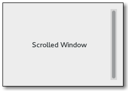

Gtk.ScrolledWindow
Example
| Subclasses: | Gtk.PlacesSidebar |
|---|
Methods
| Inherited: | Gtk.Bin (1), Gtk.Container (27), Gtk.Widget (256), GObject.Object (33), Gtk.Buildable (10) |
|---|
| static | new(hadjustment, vadjustment) |
| add_with_viewport(child) | |
| get_capture_button_press() | |
| get_hadjustment() | |
| get_hscrollbar() | |
| get_kinetic_scrolling() | |
| get_min_content_height() | |
| get_min_content_width() | |
| get_placement() | |
| get_policy() | |
| get_shadow_type() | |
| get_vadjustment() | |
| get_vscrollbar() | |
| set_capture_button_press(capture_button_press) | |
| set_hadjustment(hadjustment) | |
| set_kinetic_scrolling(kinetic_scrolling) | |
| set_min_content_height(height) | |
| set_min_content_width(width) | |
| set_placement(window_placement) | |
| set_policy(hscrollbar_policy, vscrollbar_policy) | |
| set_shadow_type(type) | |
| set_vadjustment(vadjustment) | |
| unset_placement() |
Virtual Methods
| Inherited: | Gtk.Container (10), Gtk.Widget (82), GObject.Object (7), Gtk.Buildable (10) |
|---|
| do_move_focus_out(direction) | |
| do_scroll_child(scroll, horizontal) |
Properties
| Inherited: | Gtk.Container (3), Gtk.Widget (38) |
|---|
| Name | Type | Flags | Short Description |
|---|---|---|---|
| hadjustment | Gtk.Adjustment | r/w/c | The Gtk.Adjustment for the horizontal position |
| hscrollbar-policy | Gtk.PolicyType | r/w | When the horizontal scrollbar is displayed |
| kinetic-scrolling | bool | r/w | Kinetic scrolling mode. |
| min-content-height | int | r/w | The minimum height that the scrolled window will allocate to its content |
| min-content-width | int | r/w | The minimum width that the scrolled window will allocate to its content |
| shadow-type | Gtk.ShadowType | r/w | Style of bevel around the contents |
| vadjustment | Gtk.Adjustment | r/w/c | The Gtk.Adjustment for the vertical position |
| vscrollbar-policy | Gtk.PolicyType | r/w | When the vertical scrollbar is displayed |
| window-placement | Gtk.CornerType | r/w | Where the contents are located with respect to the scrollbars. |
| window-placement-set | bool | r/w | Whether “window-placement” should be used to determine the location of the contents with respect to the scrollbars. |
Style Properties
| Inherited: | Gtk.Widget (17) |
|---|
| Name | Type | Default | Flags | Short Description |
|---|---|---|---|---|
| scrollbar-spacing | int | 3 | r | Number of pixels between the scrollbars and the scrolled window |
| scrollbars-within-bevel | bool | False | r | Place scrollbars within the scrolled window’s bevel |
Signals
| Inherited: | Gtk.Container (4), Gtk.Widget (69), GObject.Object (1) |
|---|
| Name | Short Description |
|---|---|
| move-focus-out | The ::move-focus-out signal is a [keybinding signal][GtkBindingSignal] which gets emitted when focus is moved away from the scrolled window by a keybinding. |
| scroll-child | The ::scroll-child signal is a [keybinding signal][GtkBindingSignal] which gets emitted when a keybinding that scrolls is pressed. |
Fields
| Inherited: | Gtk.Bin (1), Gtk.Container (1), Gtk.Widget (1), GObject.InitiallyUnowned (3), GObject.Object (3) |
|---|
| Name | Type | Access | Description |
|---|---|---|---|
| container | Gtk.Bin | r |
Class Details
- class Gtk.ScrolledWindow(hadjustment=None, vadjustment=None, **kwds)
Bases: Gtk.Bin
Gtk.ScrolledWindow is a Gtk.Bin subclass: it’s a container the accepts a single child widget. Gtk.ScrolledWindow adds scrollbars to the child widget and optionally draws a beveled frame around the child widget.
The scrolled window can work in two ways. Some widgets have native scrolling support; these widgets implement the Gtk.Scrollable interface. Widgets with native scroll support include Gtk.TreeView, Gtk.TextView, and Gtk.Layout.
For widgets that lack native scrolling support, the Gtk.Viewport widget acts as an adaptor class, implementing scrollability for child widgets that lack their own scrolling capabilities. Use Gtk.Viewport to scroll child widgets such as Gtk.Grid, Gtk.Box, and so on.
If a widget has native scrolling abilities, it can be added to the Gtk.ScrolledWindow with Gtk.Container.add (). If a widget does not, you must first add the widget to a Gtk.Viewport, then add the Gtk.Viewport to the scrolled window. Gtk.Container.add () will do this for you for widgets that don’t implement Gtk.Scrollable natively, so you can ignore the presence of the viewport.
The position of the scrollbars is controlled by the scroll adjustments. See Gtk.Adjustment for the fields in an adjustment - for Gtk.Scrollbar, used by Gtk.ScrolledWindow, the “value” field represents the position of the scrollbar, which must be between the “lower” field and “upper - page_size.” The “page_size” field represents the size of the visible scrollable area. The “step_increment” and “page_increment” fields are used when the user asks to step down (using the small stepper arrows) or page down (using for example the PageDown key).
If a Gtk.ScrolledWindow doesn’t behave quite as you would like, or doesn’t have exactly the right layout, it’s very possible to set up your own scrolling with Gtk.Scrollbar and for example a Gtk.Grid.
- static new(hadjustment, vadjustment)
Parameters: - hadjustment (Gtk.Adjustment or None) – horizontal adjustment
- vadjustment (Gtk.Adjustment or None) – vertical adjustment
Returns: a new scrolled window
Return type: Creates a new scrolled window.
The two arguments are the scrolled window’s adjustments; these will be shared with the scrollbars and the child widget to keep the bars in sync with the child. Usually you want to pass None for the adjustments, which will cause the scrolled window to create them for you.
- add_with_viewport(child)
Parameters: child (Gtk.Widget) – the widget you want to scroll Used to add children without native scrolling capabilities. This is simply a convenience function; it is equivalent to adding the unscrollable child to a viewport, then adding the viewport to the scrolled window. If a child has native scrolling, use Gtk.Container.add () instead of this function.
The viewport scrolls the child by moving its Gdk.Window, and takes the size of the child to be the size of its toplevel Gdk.Window. This will be very wrong for most widgets that support native scrolling; for example, if you add a widget such as Gtk.TreeView with a viewport, the whole widget will scroll, including the column headings. Thus, widgets with native scrolling support should not be used with the Gtk.Viewport proxy.
A widget supports scrolling natively if it implements the Gtk.Scrollable interface.
Deprecated since version 3.8: Gtk.Container.add () will now automatically add a Gtk.Viewport if the child doesn’t implement Gtk.Scrollable.
Returns: True if button presses are captured during kinetic scrolling Return type: bool Return whether button presses are captured during kinetic scrolling. See Gtk.ScrolledWindow.set_capture_button_press ().
New in version 3.4.
- get_hadjustment()
Returns: the horizontal Gtk.Adjustment Return type: Gtk.Adjustment Returns the horizontal scrollbar’s adjustment, used to connect the horizontal scrollbar to the child widget’s horizontal scroll functionality.
- get_hscrollbar()
Returns: the horizontal scrollbar of the scrolled window. Return type: Gtk.Widget Returns the horizontal scrollbar of scrolled_window.
New in version 2.8.
- get_kinetic_scrolling()
Returns: the scrolling behavior flags. Return type: bool Returns the specified kinetic scrolling behavior.
New in version 3.4.
- get_min_content_height()
Returns: the minimal content height Return type: int Gets the minimal content height of scrolled_window, or -1 if not set.
New in version 3.0.
- get_min_content_width()
Returns: the minimum content width Return type: int Gets the minimum content width of scrolled_window, or -1 if not set.
New in version 3.0.
- get_placement()
Returns: the current placement value. See also Gtk.ScrolledWindow.set_placement () and Gtk.ScrolledWindow.unset_placement ().
Return type: Gtk.CornerType Gets the placement of the contents with respect to the scrollbars for the scrolled window. See Gtk.ScrolledWindow.set_placement ().
- get_policy()
Returns: hscrollbar_policy: location to store the policy for the horizontal scrollbar, or None. vscrollbar_policy: location to store the policy for the vertical scrollbar, or None. Return type: (hscrollbar_policy: Gtk.PolicyType, vscrollbar_policy: Gtk.PolicyType) Retrieves the current policy values for the horizontal and vertical scrollbars. See Gtk.ScrolledWindow.set_policy ().
- get_shadow_type()
Returns: the current shadow type Return type: Gtk.ShadowType Gets the shadow type of the scrolled window. See Gtk.ScrolledWindow.set_shadow_type ().
- get_vadjustment()
Returns: the vertical Gtk.Adjustment Return type: Gtk.Adjustment Returns the vertical scrollbar’s adjustment, used to connect the vertical scrollbar to the child widget’s vertical scroll functionality.
- get_vscrollbar()
Returns: the vertical scrollbar of the scrolled window. Return type: Gtk.Widget Returns the vertical scrollbar of scrolled_window.
New in version 2.8.
Parameters: capture_button_press (bool) – True to capture button presses Changes the behaviour of scrolled_window wrt. to the initial event that possibly starts kinetic scrolling. When capture_button_press is set to True, the event is captured by the scrolled window, and then later replayed if it is meant to go to the child widget.
This should be enabled if any child widgets perform non-reversible actions on Gtk.Widget ::button-press-event. If they don’t, and handle additionally handle Gtk.Widget ::grab-broken-event, it might be better to set capture_button_press to False.
This setting only has an effect if kinetic scrolling is enabled.
New in version 3.4.
- set_hadjustment(hadjustment)
Parameters: hadjustment (Gtk.Adjustment) – horizontal scroll adjustment Sets the Gtk.Adjustment for the horizontal scrollbar.
- set_kinetic_scrolling(kinetic_scrolling)
Parameters: kinetic_scrolling (bool) – True to enable kinetic scrolling Turns kinetic scrolling on or off. Kinetic scrolling only applies to devices with source Gdk.InputSource.TOUCHSCREEN.
New in version 3.4.
- set_min_content_height(height)
Parameters: height (int) – the minimal content height Sets the minimum height that scrolled_window should keep visible. Note that this can and (usually will) be smaller than the minimum size of the content.
New in version 3.0.
- set_min_content_width(width)
Parameters: width (int) – the minimal content width Sets the minimum width that scrolled_window should keep visible. Note that this can and (usually will) be smaller than the minimum size of the content.
New in version 3.0.
- set_placement(window_placement)
Parameters: window_placement (Gtk.CornerType) – position of the child window Sets the placement of the contents with respect to the scrollbars for the scrolled window.
The default is Gtk.CornerType.TOP_LEFT, meaning the child is in the top left, with the scrollbars underneath and to the right. Other values in Gtk.CornerType are Gtk.CornerType.TOP_RIGHT, Gtk.CornerType.BOTTOM_LEFT, and Gtk.CornerType.BOTTOM_RIGHT.
See also Gtk.ScrolledWindow.get_placement () and Gtk.ScrolledWindow.unset_placement ().
- set_policy(hscrollbar_policy, vscrollbar_policy)
Parameters: - hscrollbar_policy (Gtk.PolicyType) – policy for horizontal bar
- vscrollbar_policy (Gtk.PolicyType) – policy for vertical bar
Sets the scrollbar policy for the horizontal and vertical scrollbars.
The policy determines when the scrollbar should appear; it is a value from the Gtk.PolicyType enumeration. If Gtk.PolicyType.ALWAYS, the scrollbar is always present; if Gtk.PolicyType.NEVER, the scrollbar is never present; if Gtk.PolicyType.AUTOMATIC, the scrollbar is present only if needed (that is, if the slider part of the bar would be smaller than the trough - the display is larger than the page size).
- set_shadow_type(type)
Parameters: type (Gtk.ShadowType) – kind of shadow to draw around scrolled window contents Changes the type of shadow drawn around the contents of scrolled_window.
- set_vadjustment(vadjustment)
Parameters: vadjustment (Gtk.Adjustment) – vertical scroll adjustment Sets the Gtk.Adjustment for the vertical scrollbar.
- unset_placement()
Unsets the placement of the contents with respect to the scrollbars for the scrolled window. If no window placement is set for a scrolled window, it defaults to Gtk.CornerType.TOP_LEFT.
See also Gtk.ScrolledWindow.set_placement () and Gtk.ScrolledWindow.get_placement ().
New in version 2.10.
- do_move_focus_out(direction)
Type: virtual Parameters: direction (Gtk.DirectionType) –
- do_scroll_child(scroll, horizontal)
Type: virtual
Parameters: - scroll (Gtk.ScrollType) –
- horizontal (bool) –
Return type:
Signal Details
- Gtk.ScrolledWindow.signals.move_focus_out(scrolled_window, direction_type)
Signal Name: move-focus-out
Flags: Parameters: - scrolled_window (Gtk.ScrolledWindow) – The object which received the signal
- direction_type (Gtk.DirectionType) – either Gtk.DirectionType.TAB_FORWARD or Gtk.DirectionType.TAB_BACKWARD
The ::move-focus-out signal is a [keybinding signal][GtkBindingSignal] which gets emitted when focus is moved away from the scrolled window by a keybinding. The Gtk.Widget ::move-focus signal is emitted with direction_type on this scrolled windows toplevel parent in the container hierarchy. The default bindings for this signal are `Tab + Ctrl` and `Tab + Ctrl + Shift`.
- Gtk.ScrolledWindow.signals.scroll_child(scrolled_window, scroll, horizontal)
Signal Name: scroll-child
Flags: Parameters: - scrolled_window (Gtk.ScrolledWindow) – The object which received the signal
- scroll (Gtk.ScrollType) – a Gtk.ScrollType describing how much to scroll
- horizontal (bool) – whether the keybinding scrolls the child horizontally or not
Return type: The ::scroll-child signal is a [keybinding signal][GtkBindingSignal] which gets emitted when a keybinding that scrolls is pressed. The horizontal or vertical adjustment is updated which triggers a signal that the scrolled windows child may listen to and scroll itself.
Property Details
- Gtk.ScrolledWindow.props.hadjustment
Name: hadjustment Type: Gtk.Adjustment Default Value: None Flags: r/w/c The Gtk.Adjustment for the horizontal position
- Gtk.ScrolledWindow.props.hscrollbar_policy
Name: hscrollbar-policy Type: Gtk.PolicyType Default Value: Gtk.PolicyType.AUTOMATIC Flags: r/w When the horizontal scrollbar is displayed
- Gtk.ScrolledWindow.props.kinetic_scrolling
Name: kinetic-scrolling Type: bool Default Value: True Flags: r/w The kinetic scrolling behavior flags. Kinetic scrolling only applies to devices with source Gdk.InputSource.TOUCHSCREEN
New in version 3.4.
- Gtk.ScrolledWindow.props.min_content_height
Name: min-content-height Type: int Default Value: -1 Flags: r/w The minimum content height of scrolled_window, or -1 if not set.
New in version 3.0.
- Gtk.ScrolledWindow.props.min_content_width
Name: min-content-width Type: int Default Value: -1 Flags: r/w The minimum content width of scrolled_window, or -1 if not set.
New in version 3.0.
- Gtk.ScrolledWindow.props.shadow_type
Name: shadow-type Type: Gtk.ShadowType Default Value: Gtk.ShadowType.NONE Flags: r/w Style of bevel around the contents
- Gtk.ScrolledWindow.props.vadjustment
Name: vadjustment Type: Gtk.Adjustment Default Value: None Flags: r/w/c The Gtk.Adjustment for the vertical position
- Gtk.ScrolledWindow.props.vscrollbar_policy
Name: vscrollbar-policy Type: Gtk.PolicyType Default Value: Gtk.PolicyType.AUTOMATIC Flags: r/w When the vertical scrollbar is displayed
- Gtk.ScrolledWindow.props.window_placement
Name: window-placement Type: Gtk.CornerType Default Value: Gtk.CornerType.TOP_LEFT Flags: r/w Where the contents are located with respect to the scrollbars.
- Gtk.ScrolledWindow.props.window_placement_set
Name: window-placement-set Type: bool Default Value: True Flags: r/w Whether “window-placement” should be used to determine the location of the contents with respect to the scrollbars.
New in version 2.10.
Deprecated since version 3.10: This value is ignored and Gtk.ScrolledWindow :window-placement value is always honored.